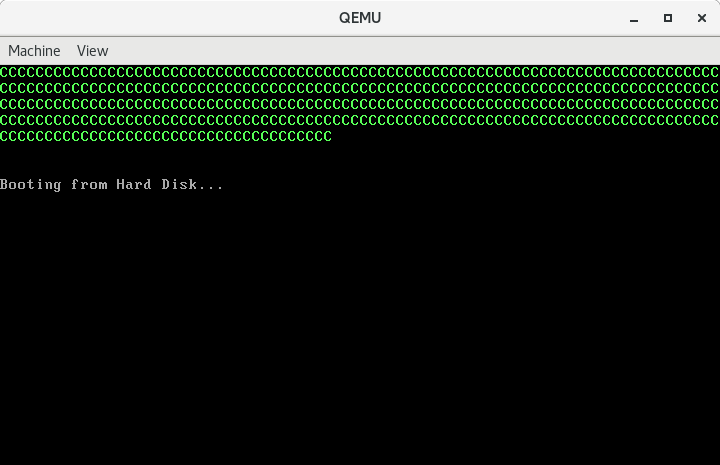

008-中断
Contents
本文将介绍中断的基础知识，并通过一些示例感受一些中断。
中断
中断就是打断CPU当前的执行流程，让CPU去处理一下别的事情。当然，CPU也可以选择拒绝。
中断的分类
中断按中断源可以分为内部中断和外部中断。
内部中断
内部中断可以由中断指令int来触发，也可以是因为指令执行中出现了错误而触发，例如运算结果溢出会触发溢出中断；除法指令的除数为0会触发除法出错中断。
外部中断
外部中断通过NMI和INTR这两条中断信号线接入CPU。
-
由
NMI接入的是非屏蔽中断(Non Maskable Interrupt)，来自这个引脚的中断请求信号是不受中断允许标志IF限制的，CPU接收到非屏蔽中断请求后，无论当前正在做什么事情，都必须在执行完当前指令后响应中断。因此非屏蔽中断常用于系统掉电处理，紧急停机等重大故障时。NMI统一被赋予中断号2。 -
由
INTR接入的是可屏蔽中断。在IBM PC/AT机中，这个信号由两片8259A级联组成，接入CPU的中断控制逻辑电路，可管理15级中断。
中断向量表
8086的中断系统可以识别256个不同类型的中断，每个中断对应一个0~255的编号，这个编号即中断类型码。每个中断类型码对应一个中断服务程序的入口地址，256个中断，理论上就需要256段中断处理程序。在实模式下，处理器要求将它们的入口点集中存放到内存中从物理地址 0x00000开始，到0x003ff结束，共1KB的空间内，这就是所谓的中断向量表(Interrupt Vector Table, IVT)。
每个中断在中断向量表中占2个字，分别是中断处理程序的偏移地址和段地址。中断0的入口点位于物理地址0x00000处，也就是逻辑地址0x0000:0x0000；中断1的入口点位于物理地址0x00004处，即逻辑地址0x0000:0x0004，其他中断依次类推。
中断处理过程
-
保护断点的现场。先将标志寄存器
FLAGS压栈，然后清除IF位和TF位。将当前的代码段寄存器cs和指令指针寄存器ip压栈。 -
执行中断处理程序。将中断类型码乘以
4（每个中断在中断向量表中占4个字节），得到了该中断入口点在中断向量表中的偏移地址。从中断向量表中依次取出中断程序的偏移地址和段地址，分别替换ip和cs以转入中断处理程序执行。 -
返回到断点接着执行。中断处理程序的最后一条指令必须是中断返回指令
iret。iret执行时处理器依次从堆栈中弹出ip、cs、flags，于是处理器转到主程序继续执行。
下面我们通过几个例子感受一下。
实战
示例一
该示例演示内部中断。
代码
|
|
运行
|
|
示例二
该示例演示外部中断。
代码
|
|
运行
|
|
中断每隔54.925 ms触发一次，屏幕上也会每隔54.925 ms打印一次字符。这个示例程序中我们没有控制si的大小，在运行的时候要注意这一点。
示例三
该示例演示外部中断，并且重新设置了8259a。
代码
|
|
运行
|
|

运行结果和上一个示例类似。